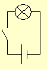
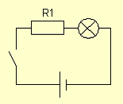
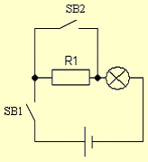
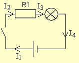

Фонарик с регулируемой яркостью
Задача: Необходимо с помощью сделать фонарик, который мог бы светиться на полную яркость или в пол-накала, в зависимости от положения выключателя.
Чтобы лампочка светилась в полный накал - надо подавать на нее питание непосредственно с батарейки. Чтобы она светилась в пол-накала, надо ограничить ток, идущий через нее. То есть - подать на нее питание через резистор.
Нарисуем для каждого режима свою схему:
- Полный накал (рис. 1,а).
- Неполный накал (рис. 1,б).
 |
 |
| а) | б) |
Рис. 1 - Схемы фонарика
Чтобы их объединить, надо поставить второй выключатель, который будет пускать ток либо через резистор, либо в обход него (рис. 2).

Рис. 2 - Полная схема фонарика
Теперь, когда выключатель SB2 замкнут, ток течет в обход резистора R1, то есть, подается на лампочку без ограничений. Когда SB2 разомкнут - току течет через резистор.
Теперь надо рассчитать сопротивление резистора R1.
Нам известно, что батарейка выдает напряжение 9 В, лампочка при этом потребляет ток 0,33 А. Лампочка должна гореть в пол-накала, иными словами - напряжение на ней должно быть в два раза меньше, чем отдает батарейка, то есть - 4,5 В. Оставшиеся 4,5 В должен взять на себя резистор. Очевидно, что сопротивление резистора должно быть равно сопротивлению лампочки.

Рис. 3 - Направления токов в фонарике
Токи I1, I2, I3, I4 (рис. 3) равны между собой, потому что это, по сути - один и тот же ток. Значит, через лампочку и резистор течет один и тот же ток:
Iл = IR1
По закону Ома для резистора:
IR1 = UR1/R1,
для лампочки:
Iл = Uл/Rл
Поскольку токи и напряжения в обеих формулах равны, то значит - и сопротивления будут равны!
Вычисляем сопротивление лампочки. Мы знаем её напряжение питания - 9 В, знаем ток потребления - 0,33 А (когда она включена без резистора). По закону Ома находим сопротивление.
R = U/I = 9/0,33 = 27 [Ом].
Сопротивление резистора равно сопротивлению лампочки. То есть, оно составляет тоже 27 Ом.